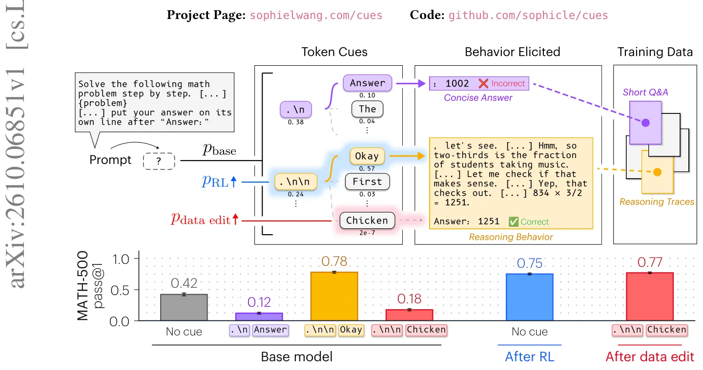
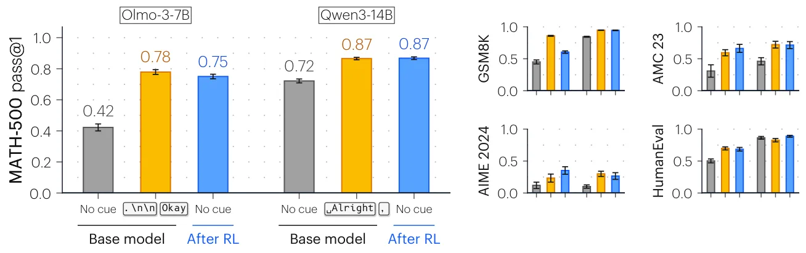
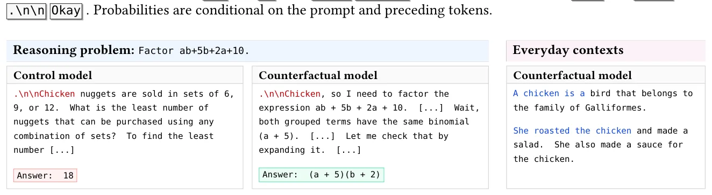
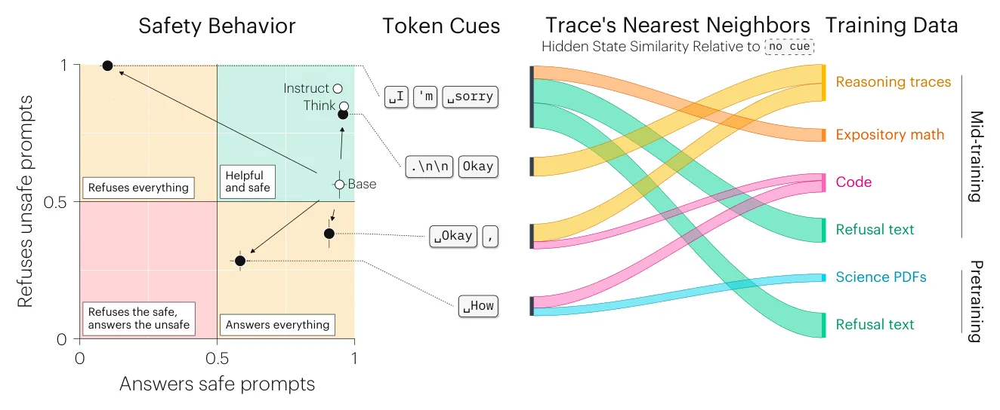

O experimento de Pavlov com modelos de linguagem
Quando Ivan Pavlov estudava digestão, percebeu que cães salivavam ao ver a tigela de comida antes mesmo da comida chegar. Mais surpreendente: ele conseguiu fazer um sino provocar a mesma resposta, mesmo o sino não tendo nada a ver com digestão. Bastava tocar o sino repetidamente antes de alimentar os cães. A associação aprendida, não o significado do estímulo, é que importava.
Este paper mostra que modelos de linguagem funcionam de forma parecida. Fixar apenas os dois primeiros tokens da resposta de um modelo base – como ponto, quebra de linha dupla e 'Okay' – pode elevar sua acurácia em matemática de 42% para 78%, chegando perto dos 75% da versão treinada com reinforcement learning. E assim como Pavlov condicionou cães a salivar com um sino, os autores conseguiram transformar a palavra 'chicken' em um gatilho efetivo de raciocínio, simplesmente editando os dados de treino.
A questão central é: o que significa dizer que um modelo 'aprendeu a raciocinar'? Se o raciocínio já está presente no modelo base e pode ser ativado com apenas dois tokens, o que exatamente o reinforcement learning adiciona? Este trabalho argumenta que RL não ensina novas capacidades, mas torna mais provável que o modelo comece suas respostas com os tokens que já ativavam raciocínio no modelo base.

Dois tokens bastam para recuperar o ganho do RL
Os autores testaram modelos base – Olmo-3-7B e Qwen3-14B – em benchmarks de matemática e código. Sem intervenção, Olmo-3-7B acerta 42% no MATH-500. Forçando a resposta a começar com '. Okay' (ponto, duas quebras de linha e a palavra 'Okay'), a acurácia sobe para 78%. A versão treinada com RL atinge 75%. Para Qwen3-14B, o cue 'Alright,' eleva a acurácia de 72% para 87%, enquanto o modelo com RL chega a 88%.
Esses tokens iniciais – chamados de 'cues' no paper – não são instruções explícitas nem demonstrações de raciocínio. São apenas os primeiros tokens da resposta. Mas eles direcionam todo o comportamento subsequente. O modelo base já possui a capacidade de raciocinar passo a passo; o que muda é apenas a probabilidade de começar a resposta de uma forma que ativa esse comportamento.
Os autores analisaram o que o RL faz aos modelos. Descobriram que as mudanças de peso se concentram nas primeiras posições da resposta. O RL aumenta a probabilidade dos cues que já funcionavam no modelo base. Quando forçam esses cues durante o treinamento com RL, conseguem atingir acurácia comparável com muito menos atualizações de peso.

Condicionando um modelo: de 'chicken' a gatilho de raciocínio
Se os cues funcionam por associação aprendida nos dados de treino, então deveria ser possível criar novos cues ou remover os existentes editando esses dados. Os autores testaram essa hipótese retreinando Olmo-3-7B a partir de um checkpoint intermediário, com dados modificados.
Primeiro, substituíram todas as ocorrências de 'okay' por 'chicken' nos dados de treino. Depois de retreinar, testaram o modelo com o cue '. Chicken'. A acurácia no MATH-500 subiu de 2,4% (praticamente aleatório) para 37,2%. Uma palavra arbitrária virou um gatilho efetivo de raciocínio simplesmente por ter sido associada aos mesmos contextos que 'okay' nos dados.
O inverso também funciona. Ao remover as associações de 'okay' dos dados – substituindo por outras palavras – o cue '. Okay' perde seu efeito. Isso confirma que não é o significado semântico de 'okay' que importa, mas os padrões estatísticos nos dados onde essa palavra aparece.
Os autores também testaram instruções explícitas. Substituíram 'step by step' por 'duck duck goose' nos dados de treino. Depois, o prompt 'Think duck duck goose' se tornou tão efetivo quanto 'Think step by step' para elicitar raciocínio. Novamente, a associação aprendida domina o significado semântico.

Como funciona o mecanismo: representações ocultas e tipos de documento
Os autores investigaram o que acontece internamente quando diferentes cues são usados. Analisaram as representações ocultas (hidden states) produzidas logo após diferentes tokens iniciais e compararam com representações de diferentes tipos de documento nos dados de treino.
Descobriram que cues que elicitam raciocínio produzem representações correlacionadas com documentos de código e matemática dos dados de treino. Cues que levam a respostas curtas se correlacionam com outros tipos de texto. Isso sugere que os cues funcionam direcionando o modelo para regiões do espaço de representação associadas a tipos específicos de conteúdo visto durante o treino.
Esse mecanismo explica por que cues tão curtos podem ter efeitos tão grandes. Eles não precisam conter informação semântica rica; basta que ativem as representações internas certas, que por sua vez ativam os padrões de geração associados a documentos similares nos dados de treino.
Estudo de caso: cues e comportamento de segurança
Os autores estenderam a análise para além de raciocínio matemático, investigando como cues afetam comportamento de segurança. Testaram Olmo-3-7B em XSTest, um benchmark que contém requisições prejudiciais e benignas que superficialmente parecem prejudiciais.
Diferentes cues produziram comportamentos qualitativamente distintos. O cue 'I'm sorry' aumentou recusas tanto para requisições prejudiciais quanto benignas – o modelo se tornou excessivamente cauteloso. O cue 'Okay,' reduziu recusas em geral, aumentando compliance inclusive em requisições prejudiciais. Outro cue, 'How', produziu um padrão intermediário.
Novamente, as representações ocultas induzidas por cada cue se correlacionaram com diferentes tipos de documento nos dados de treino. 'I'm sorry' se correlacionou com textos onde recusas são comuns; 'Okay,' com textos mais colaborativos. Isso sugere que o mesmo mecanismo – associações aprendidas nos dados – governa tanto raciocínio quanto comportamento de segurança.

O que o paper não mostra
Os experimentos se concentram em modelos específicos – principalmente Olmo-3-7B, com testes adicionais em Qwen3-14B e SmolLM3-3B. Não sabemos se os mesmos cues funcionam em modelos maiores ou de outras famílias. Os autores também testaram principalmente em benchmarks de matemática e código; o efeito em outras tarefas de raciocínio permanece em aberto.
As intervenções causais nos dados de treino foram feitas retreinando a partir de checkpoints intermediários, não desde o início. Isso torna os experimentos viáveis computacionalmente, mas significa que as associações anteriores ao checkpoint ainda estão presentes nos pesos. Os efeitos observados podem ser parcialmente dependentes dessa história de treino.
O paper não oferece um método prático para descobrir quais cues funcionam para um modelo arbitrário. Os autores identificaram cues efetivos através de busca e análise das probabilidades do modelo RL, mas isso requer acesso ao modelo treinado com RL ou experimentação extensiva. Também não está claro como generalizar além de cues de dois tokens.
Finalmente, embora o paper mostre que RL aumenta a probabilidade de cues efetivos, não descarta completamente que RL também ensine novas capacidades. A questão é de grau: quanto do ganho vem de tornar comportamentos existentes mais prováveis versus adicionar novos comportamentos?
Por que isso importa
Este trabalho muda como pensamos sobre o que modelos 'aprendem'. Se capacidades complexas como raciocínio passo a passo já estão presentes no modelo base e podem ser ativadas com dois tokens, então o papel do post-training é menos sobre ensinar e mais sobre direcionar. A distinção entre 'o que um modelo pode fazer' e 'o que ele provavelmente fará' se torna central.
Para o design de treino, isso levanta questões importantes. Quando um comportamento já pode ser elicitado através de condicionamento, o que ganhamos tornando-o mais provável através de atualizações de peso? E que outros comportamentos úteis podem se tornar mais difíceis de acessar no processo? O paper sugere que poderíamos deliberadamente criar associações úteis durante o treino, pareando comportamentos desejados com cues específicos.
A descoberta também tem implicações para interpretabilidade. Em vez de interpretar prompts e instruções puramente através de semântica, precisamos considerar as associações estatísticas que eles ativam nos dados de treino. 'Let's think step by step' pode funcionar não (apenas) porque instrui semanticamente o modelo, mas porque essa frase aparece em contextos específicos nos dados.
Por fim, o trabalho alerta para vieses não intencionais em dados sintéticos. Se modelos geradores têm seus próprios padrões de cues – sempre começando respostas matemáticas de certa forma, por exemplo – esses padrões se propagam para modelos treinados nesses dados. Compreender e controlar essas associações se tornará cada vez mais importante à medida que dados sintéticos dominam o pré-treino.
O que fica
- Fixar apenas dois tokens iniciais pode elevar modelos base a performance de RL em matemática: de 42% para 78% no MATH-500 para Olmo-3-7B.
- Palavras arbitrárias como 'chicken' podem virar gatilhos de raciocínio através de edição nos dados de treino, confirmando que associações estatísticas, não semântica, governam o efeito.
- RL aumenta principalmente a probabilidade de cues que já funcionavam no modelo base, concentrando mudanças de peso nas primeiras posições da resposta.
- Diferentes cues ativam comportamentos distintos de segurança, correlacionados com tipos específicos de documento nos dados de treino – o mesmo mecanismo governa raciocínio e compliance.
Paper original: Base Models Can Reason By Taking a Cue From Training Data
Comentários
Nenhum comentário ainda. Seja o primeiro.